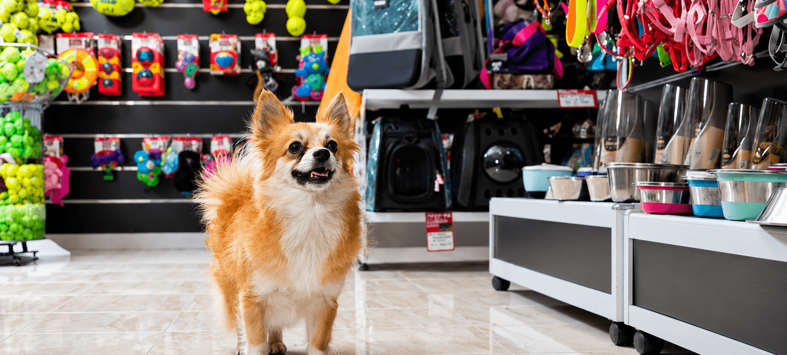

Pet Product Stores in Philadelphia
From food and treats to toys and grooming supplies, here are some places in Philadelphia where you can shop for your pet.

Local and Chain Pet Stores
Pet Supplies Plus
A chain store with multiple Philadelphia-area locations. Carries a wide range of food, treats, toys, and grooming products. Offers grooming services and self-wash stations at select locations.
Doggie Style Pets (Rittenhouse)
A local boutique pet shop in the Rittenhouse Square area. Specializes in natural and premium pet food, accessories, and grooming products for dogs and cats.
PetSmart (Various Locations)
A large national chain with several locations in and around Philadelphia. Good for bulk food purchases, training supplies, and full grooming services. Also connects with adoption events.
What to Buy When You First Get a Pet
- Food and water bowls - Choose stainless steel or ceramic for easy cleaning.
- Pet food - Ask your vet for a brand recommendation based on your pet's age and size.
- Collar and ID tag - Required for dogs in Philadelphia. Include your phone number on the tag.
- Leash - Six feet or shorter for city parks. A standard flat leash is a good start.
- Waste bags - Always keep a roll attached to your leash.
- Bed or crate - Gives your pet a safe, comfortable space at home.
- Toys - Help with mental stimulation and bonding.
Budget-Friendly Shopping Tips
Save Money Without Sacrificing Quality
Buy staple items like food and waste bags in bulk online or at large chain stores. For toys and accessories, check local Facebook groups, Nextdoor, or thrift stores - many gently used items are available at low cost. Ask your vet before switching pet food brands, especially for puppies and kittens.